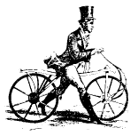
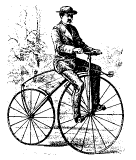
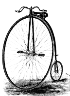
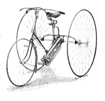
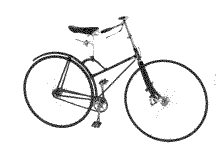

This paper first looks at overall patterns in invention and evolution, and then considers the paths taken by individual designs from initial concept to fully-fledged, marketed and sold products. Although the evolution of designs can take one of many different paths, innovation in general seems to follow a cycle of fifty years known as the long cycle.
For millions of years, all design in the world was purely evolutionary. Living organisms evolved because random improvements in their genetic structure gave them a competitive advantage over other organisms. This allowed them to thrive until another random improvement was made, giving another new organism an advantage, and so on. French [1] cites the hexagonal structure of beehives and the engineering skill of beavers' dams as examples of the brilliance of evolutionary design.
Less than a hundred thousand years ago man was starting to show signs of conscious design, with items such as the hand-axe and pottery starting to appear. About twenty thousand years ago man invented the bow, a great feat of engineering design which probably wasn't fully appreciated by its inventors. At first these innovations by man would only happen sporadically, with one occurring every few hundred years. As time passed, these innovations started to occur a few generations apart. In the last two hundred years the pattern seems to have become a cycle with a period of fifty years, known as the long cycle.
The Russian economist Nikolai Kondratiev published a paper in 1925 stating that the world's capitalist economies follow a trend, now known as the long cycle, which apparently began with the Industrial Revolution in the 1780s. This long cycle has a period of about 50 years, during which time the economy rises and then falls. Although Kondratiev just presented the facts and didn't offer any explanation for this trend, Joseph Schumpeter in 1939 suggested that the waves are produced by industrial revolutions. The Industrial Revolution (1790 - 1813), which was based on the discovery of smelting iron ore with coal and the mechanisation of the cotton industry, was just the first of these revolutions to occur. Following revolutions have been the age of steam, railways and Bessemer steel (1844 - 1874), electricity, chemicals and cars (1895 - 1916), aircraft, weaponry and electronics (1945 - 1968) and the present revolution of computers and genetic engineering (1995 - ?).
These revolutions were triggered by periods of great invention, from which innovation created many outstanding designs. The distinction made by Schumpeter was that invention was the discovery of a new concept, whereas innovation was the application of this concept. Schumpeter also suggested that the innovations would have to be all-pervasive, affecting many areas of the economy, in order to produce a Kondratiev cycle.
The first industrial revolution started in Britain. Between 1820 and 1850 Britain was the source of two thirds of the world's coal, half of its iron and cotton cloth and more than one half of its steel. Competition was minimal, as the USA was too young, France had been set back by the Napoleonic Wars and most of the rest of Europe was still disorganised and agriculture based. As Dr Johnson wrote (Ray [2]) "every Master Manufacturer hath a new Invention of his own and is daily improving on those of others". Steam power was used in abundance by the cotton industry, with Britain owning more than half of the world's steam engines. It was this invention of the steam engine and its subsequent innovations of a separate condenser (French [1] saw the separation of functions as an effective method of innovation) and the rotative engine that caused the first Kondratiev cycle.
The second revolution was the boom of the railways in 1844. Again Britain led the field, although by the end of the cycle (1870s) Germany, Italy and other European countries were exceeding Britain's growth rate. Despite this, Britain still had the advantage in coal, iron, steel and cotton cloth. This cycle was induced by the locomotive, invented by Trevithick in 1804 to haul coal in Wales, and its innovations (Stephenson's rocket in 1814, locomotives as public transport in 1825).
The third revolution starting in 1895 was caused by innovations in electricity and the automobile. This time, Germany and the USA tended to dominate. Henry Ford led the area of automobiles, while Siemens, Westinghouse and General Electric had control of electricity and electrical engineering. The internal combustion engine was invented in the seventeenth century, with Daimler (1887) providing the innovation. Faraday discovered electricity in 1831, with innovations from the likes of Franklin, Galvani, Volta and Ampere.
The fourth revolution (in the 1960s) involved chemistry (catalytic cracking, synthetics and antibiotics), aircraft such as jets and helicopters and electronics (TV, basic computers). It was led by the USA, with an increasing input by the Japanese in the field of electronics. Nuclear power has been suggested as a further invention of the fourth Kondratiev cycle, although this has not proved as pervasive as the other three major inventions.
The fifth revolution is supposedly occurring at the moment. Hall [3] predicted that the main component of this revolution would be the microcomputer, and this seems to be coming true. No-one can deny that in the last few years computers have started to move from industry and work to the home, with the home PC and the Internet evolving in leaps and bounds. In this innovation, Japan and the USA seem to be on an even footing, with neither able to totally dominate the market. Other inventions and innovations are happening in the field of genetic engineering. Although strictly regulated, this area is providing many improvements throughout life, including improvement of foods and the fight against disease.
It is anybody's guess as to what the sixth revolution will be. A possibility is that man will finally solve the problem of providing cheap, renewable energy. The only obvious solution to this is solar power, as it has more potential than wind or water power and tends to have less effect on the earth's natural weather systems.
The Kondratiev cycle seems to be an effective model of the economy. Of course, this does not mean that a sixth cycle will occur, or even if the fifth cycle will be completed. In the sixty years since Kondratiev suggested that the trend had been followed, and may continue to be followed, by the world's economy, the cycle has managed to continue, although it seems to be speeding up slightly.
In 1979, Mensch suggested the need for a "new push of basic innovations" to help the world economy. After mapping the previous 200 years of economic/technical history he found that they tended to cluster at regular periods, Schumpeter's predictions of the late thirties. The following information was compiled by Ray [2].
| Mensch's basic Innovations | Kondratiev's (original) cycles | |
| Trough Years | 1795 | 1790 |
| 1845 | 1844 | |
| 1905 | 1895 | |
| 1955 | ||
| Peak Years | 1770 | |
| 1825 | 1814 | |
| 1885 | 1874 | |
| 1935 | 1916 |
It can be seen that the two sets of data match quite closely. This shows the probability of a connection as, although Schumpeter made conjectures as to the correlation of economic cycles and possible of innovation, Mensch was concerned mainly with innovation and Kondratiev mainly with the economy. As the two are totally separate, it can be assumed that the data was not "manipulated" in order to fit any theory.
Surprisingly, these waves also seem to spark off major wars. With the exception of the Second World War, all of the major wars from the beginning of the first industrial revolution occurred at the height of the Kondratiev cycle. The Napoleonic Wars, the American Civil War and the Central European Wars, the First World War and Vietnam all occur at the end of the successive expansion phases of the cycle.
Hill [4] looked at the process of innovation as containing five distinct steps. He believed that innovation is borne of driving curiosity rather than a flash of inspiration. This curiosity is all too often in the transition from childhood to adulthood, as we learn to accept things as they are.
The five steps are as follows:
Of course, not all innovations occur in this way. Most large companies have a Research and Development (R&D) department, specifically there to design and innovate. Within this structure, brainstorming is used. Hill [2] promotes loose thinking and only positive criticism in order for brainstorming to become an effective tool. Robertson [5] questions the effectiveness of these "think tanks" and relates that the acronym NIH, which R&D uses for innovation that is "Not In House", is also said to stand for "Not Invented Here". This term is used in a derogatory manner to point out that the innovation is only used by R&D and not invented by them. Jewkes, Sawers and Stillerman (1958) pointed out that most successful innovators are independent, small, outside firms or isolated individuals. Popper [6] believes that innovation is a product of conjectures and the attempt to refute them.
The evolution of designs, in order for a company to try and control and dominate the market, seems to happen in several distinct ways. Roy [7] used the simple example of the bicycle to illustrate Gardiner and Rothwell's model of design evolution.
|  Figure 1 - Hobby Horse |
 Figure 2 - Bone-shaker |
|  Figure 3 - Penny Farthing |
 Figure 4 - Tricycle |
|  Figure 5 - Safety Bicycle |
These five types of design evolution do not have to be followed in the order shown above, and neither do they all have to appear in the evolution of a design. In fact, ideas such as Sir Clive Sinclair's electric bicycle motor (the Z2) suggest a return to divergent new ideas in the bicycle evolution, which was originally the first step.
Other ideas on how designs evolve have been put forward by Abernathy and Utterback [8], Robertson [5] and Pugh [9], and all fit different examples of design evolution quite closely, although none manage to fit the majority of designs.
Although there have been many models put forward by various people about how innovation occurs, as well as great amounts of research into how to generate the maximum possible amount of innovation, it seems that the innovative products of the human mind are as poorly understood and mapped out as the mind itself. Hill and Roy both managed to model possible paths of innovation, but these only seem to fit in certain cases. If we view innovation as a whole, as Schumpeter and Mensch did, the unpredictability of innovation is reduced as the random inventions and innovations of man are averaged out. Innovation then tends to follow a pattern that has been around for two hundred years, namely that of the long cycle. Although the cycle has proved itself so far, there is no promise that it will continue to do so as mankind moves on.